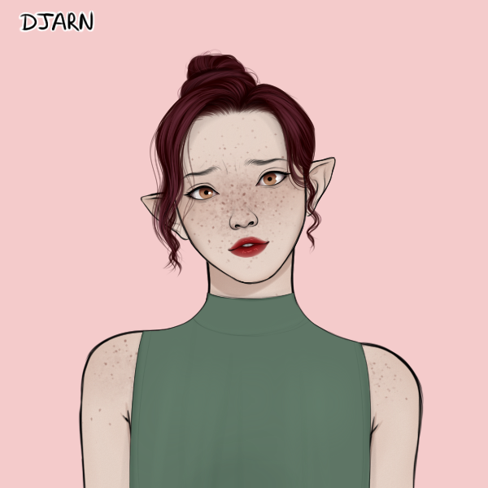
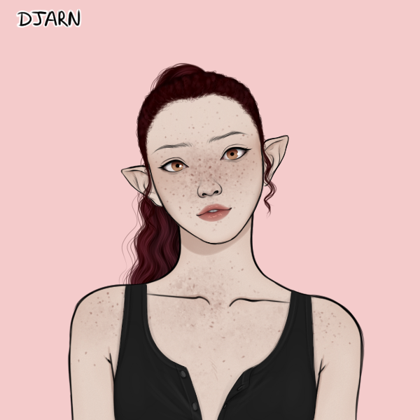
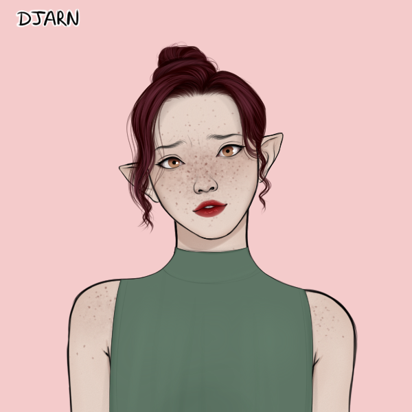
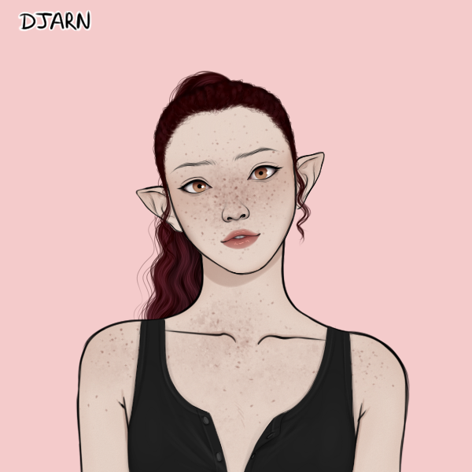

About Kiera
Kiera is a passionate, loyal, sarcastic, loving 19 year old. She's been living with her mother, her mom's husband and Mia, her step-sister since she was 11 years old, when her father passed away.
A few months ago there was an robbery that took Kiera's step-dads life. Kiera was there but she doesn't remember any part of that night. It's all blank. All she knows is Mia now blames her for her fathers death. Mia never liked Kiera but now she hates her.
When Mia invites Kiera on a camping trip to Russell Island, Kiera is estatic. Maybe Mia was starting to forgive her. Instead of having a relaxing camping trip, that consisted of sisterly bonding, a huge storm desends on their boat.
Kiera wakes up on Russell Island, only to see Mia being taken by strange people with pointed ears and black markings on their arms.
Lucas, Mia's ex boyfriend, Kenzie, his obnoxious and outspoken friend, and Kiera all get dragged into another Realm. One where their nightmares become reality. A world that makes you question what's real and what isn't. Not only that, Kiera is starting to notice changes in herself.
What if she isn't who she believed herself to be?

She has rare magic they thought was a myth.
Kiera's Characteristics
- Long, curly, auburn hair
- Vivid golden eyes that glow
- Pale skin
Kiera's Friends
- Lucas Reed
- Kenzie Emery, if she can call him a friend. An hungry, angry lion was a better friend than Kenzie
- Julian Požár
- Mia Hale
- Kimeko
- Danger and her babies